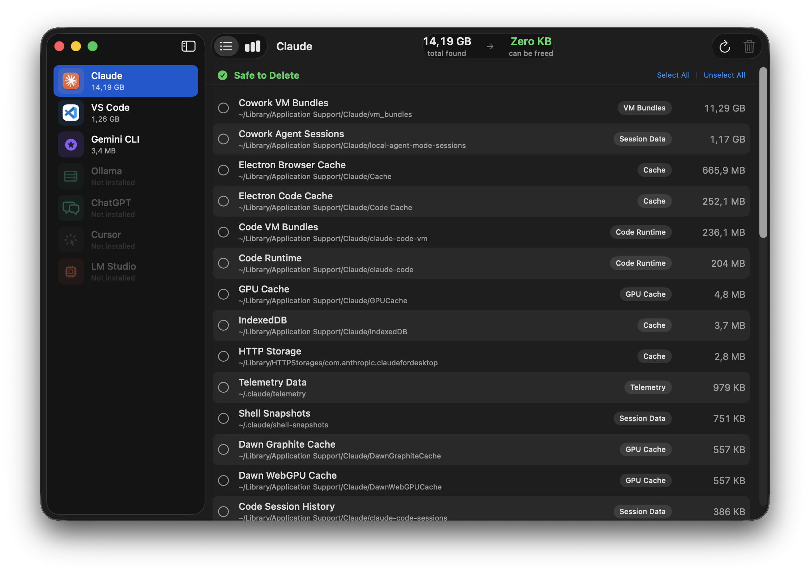
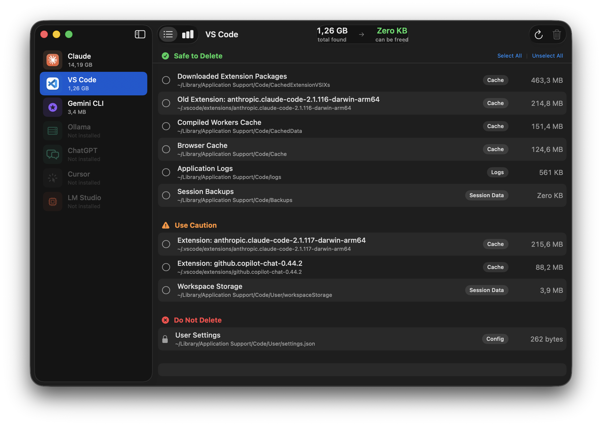
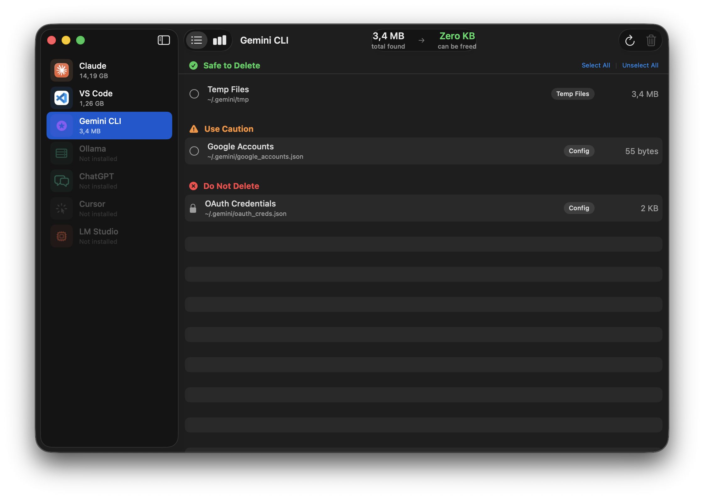
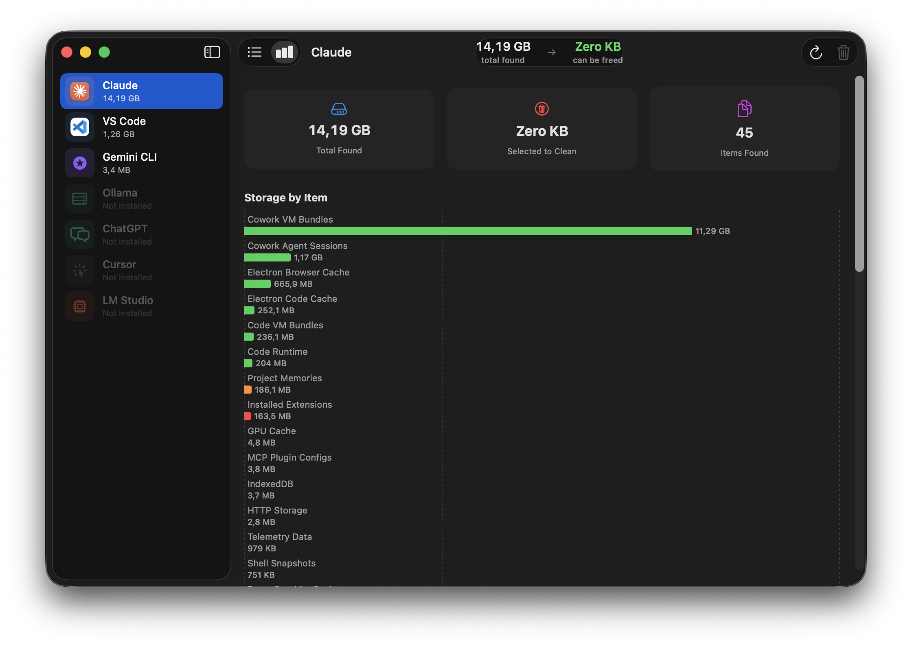

Nine AI apps. One clean sidebar.
Aichive shows each supported app as its own tab with the real app icon and a live size badge. Apps you don't have installed appear dimmed.
/tmp/claude-* directories.A native macOS experience, not a web wrapper.
Sidebar navigation, segmented tabs, SF Symbols, traffic-light window controls. Every detail feels like it belongs on your Mac because it is built on SwiftUI.




Not a sledgehammer. A scalpel.
Generic cleaners don't know the difference between your chat history and a 40 GB cache blob. Aichive does — because every path was audited by hand.
Trash, never permanent
Every selected item is moved via FileManager.trashItem. If you change your mind, restore from the Trash like any other file.
Audited paths
Every scan location was verified on a real machine. We know which files are regenerable caches and which hold your settings — and label them accordingly.
No account. No telemetry.
Runs entirely on your Mac. Nothing leaves your machine.
Per-app views
List and chart views for each app. Sort by size. Select what to remove individually.
Smart duplicates
When you have two versions of Claude Code installed, the older one is flagged as safe to delete automatically.
One sidebar. Nine apps. Growing with every update.
New AI tools arrive all the time. As they become popular, we audit their file layout and add them as a new tab — with the same safety classification you see today. No configuration, no subscriptions.
Three colors. No ambiguity.
Every scanned path is classified before you see it. The same colors appear throughout the app — green, orange, red — and the UI refuses to let you select the red ones.
Scan. Review. Trash.
No configuration, no profiles, no preset cleanup recipes. Just three steps you can stop at any time.
Pick an app
The sidebar shows every supported app with its real icon. Tap one — Aichive scans it in the background and shows every discovered item sorted by size.
Review & select
See each path with its category, safety level, and size. Flip between a grouped list and a horizontal bar chart. Select everything safe with one click, or pick individually.
Move to Trash
A final confirmation shows exactly how many items and how many megabytes. Aichive moves them to the Trash and re-scans so you can see what's left.
Runs on modern Macs.
Questions, bug reports, feature ideas?
Email me directly. I read everything and usually reply within a day.
walter.tengler@gmail.comDisclaimer. Aichive moves selected files to the macOS Trash — never permanent deletion — and every cleanup requires your explicit confirmation. Items flagged Do not delete cannot be selected in the UI. However, no software is guaranteed bug-free, and file layouts used by third-party AI apps can change at any time. Always maintain your own backups. Aichive is provided as is without warranty of any kind; the author accepts no liability for any data loss, loss of work, or other damages resulting from use of this software. Full terms in the imprint.